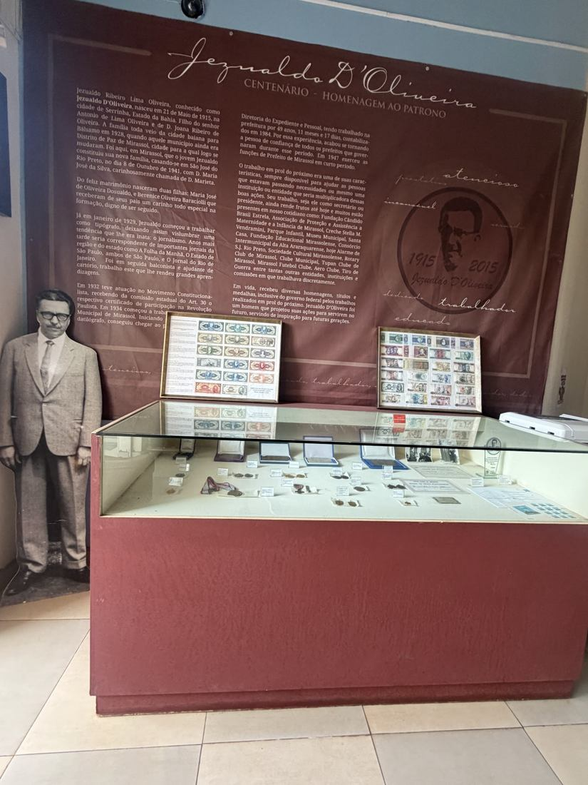

Cabra de duas cabeças
Uma das peças mais lembradas pelos visitantes e um convite à curiosidade.
Conhecer o tema →Explore temas do acervo do Museu Municipal Jezualdo D’Oliveira por meio de conteúdos educativos acessíveis no celular.
Explorar o acervoEste projeto-piloto propõe o uso de QR Codes para ampliar as informações disponíveis durante a visita. Conheça três temas ligados à memória e ao acervo do museu.
Uma das peças mais lembradas pelos visitantes e um convite à curiosidade.
Conhecer o tema →

A proposta é simples: o visitante encontra um QR Code junto à identificação de uma peça, aponta a câmera do celular e acessa informações complementares. As placas físicas e a mediação presencial continuam disponíveis.